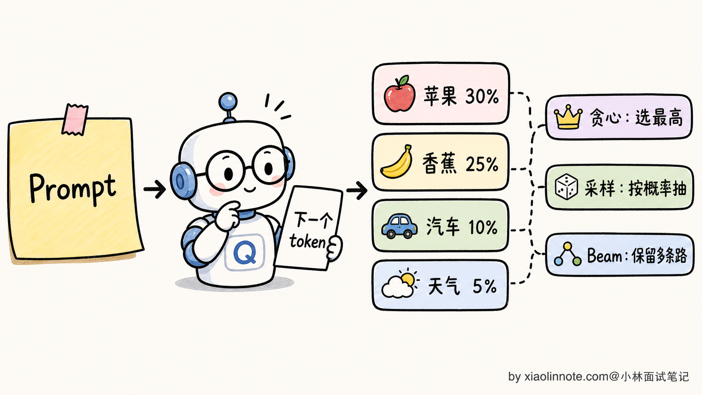
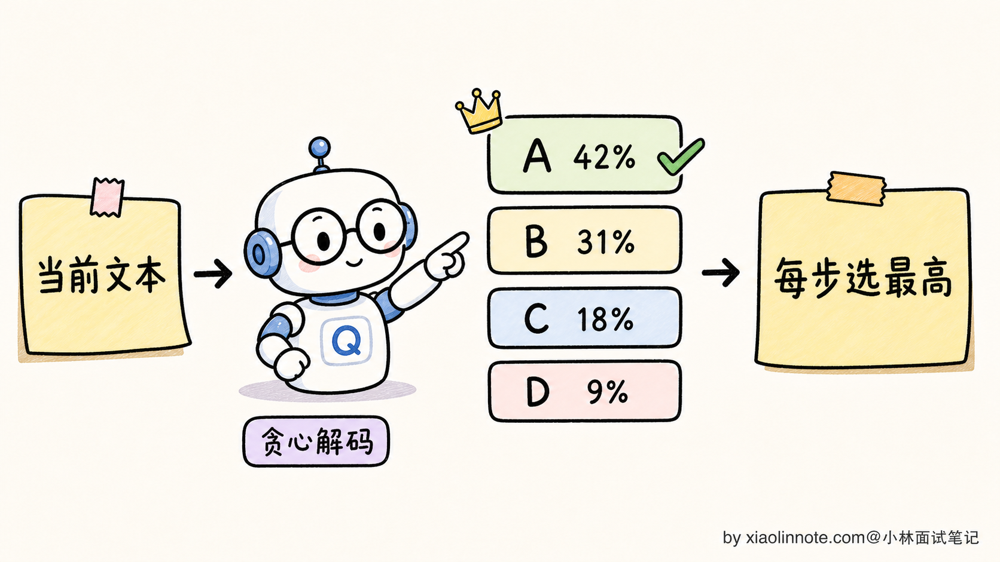
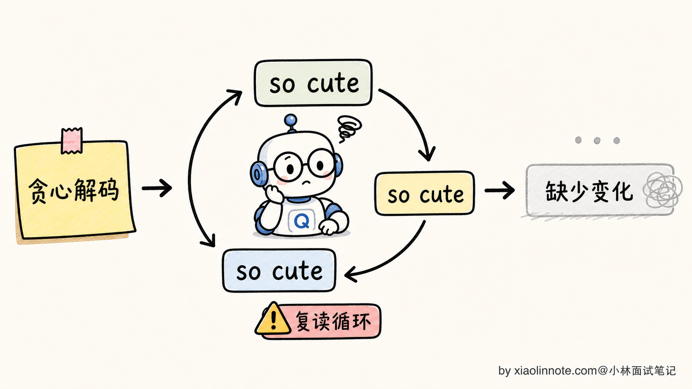
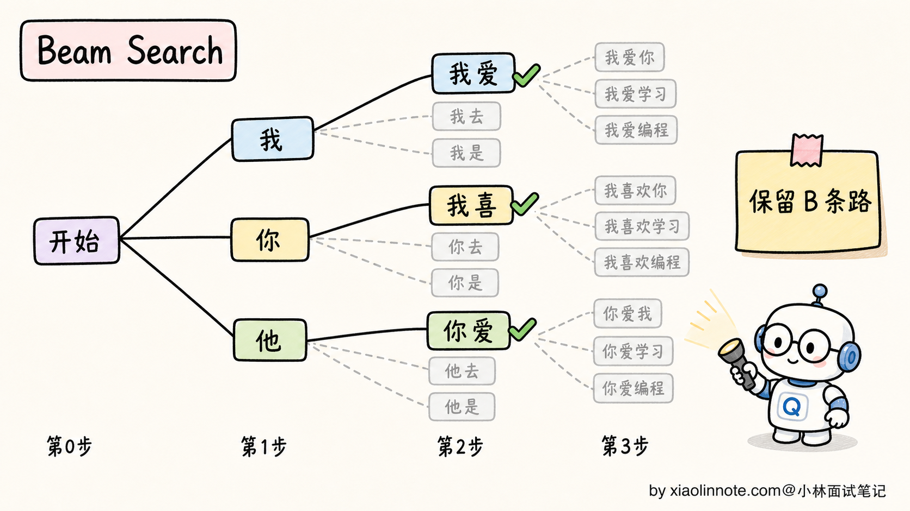
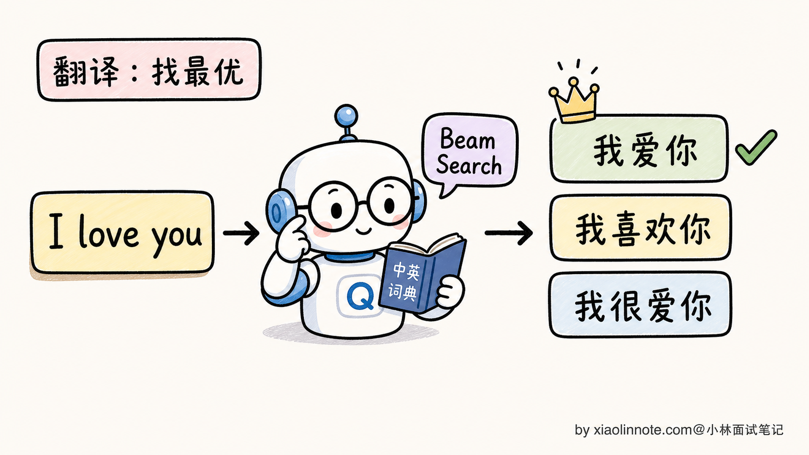
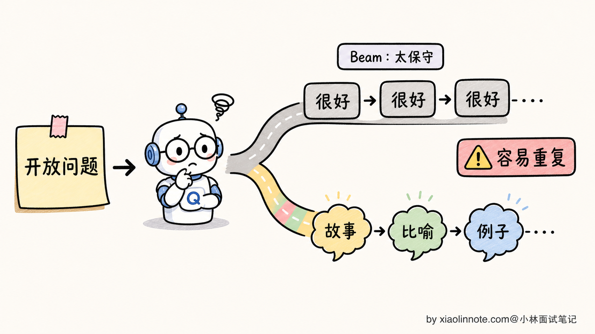
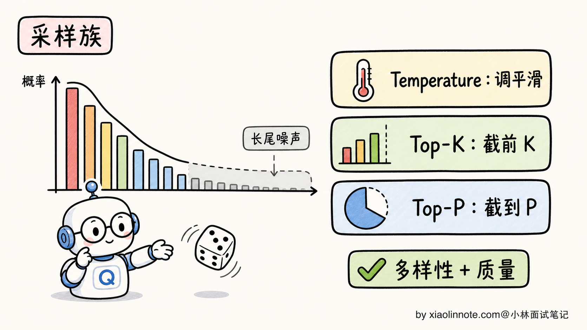
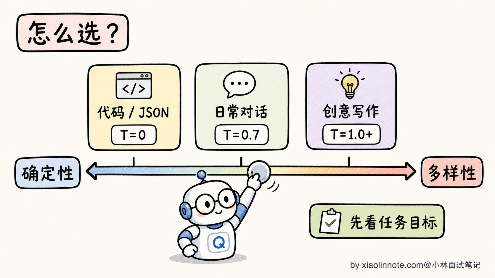
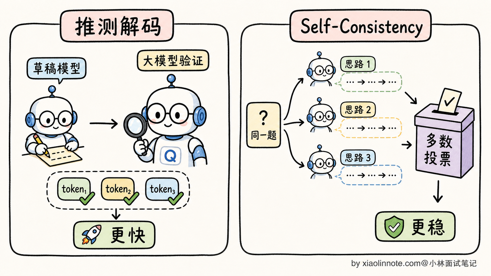

本篇目录
12. 大模型生成文本时的解码策略有哪些？贪心、Beam Search、采样分别什么时候用？
👔面试官：来讲讲大模型生成文本时的解码策略有哪些？贪心、Beam Search、采样这几种各自在什么场景用？
🙋♂️我：解码策略就是怎么从模型输出的概率分布里选一个 token。最简单的是贪心，每次选概率最高的那个；复杂一点是 Beam Search，会保留几个候选；还有采样的，有 Temperature、Top-K、Top-P 这些。
👔面试官：……你只列了名字，没说本质。贪心和采样的区别是「确定 vs 随机」，那 Beam Search 是确定还是随机？为什么 LLM 现在很少用 Beam Search 了？翻译模型时代为什么大家都用 Beam Search？
🙋♂️我：哦哦，Beam Search 应该是确定的，能更准。LLM 不用是因为……更慢吧？
👔面试官：「更慢」是表面原因。深一点说，Beam Search 在翻译时代很受欢迎是因为翻译任务有「单一最优译文」的特性，但生成式对话/写作任务没有「单一最优答案」，Beam Search 的「保留多个高概率路径」反而成了缺陷。这个本质区别你能讲清楚吗？
🙋♂️我：呃……我没想这么深。
👔面试官：那再问一个：贪心解码和「Temperature=0 的采样」是同一回事吗？为什么 LLM 工程实践里大多数推理 API 默认用 Temperature 采样而不是贪心？回去搞清楚再来。
问到这里我自己也清醒了，解码策略表面是「下一个 token 怎么挑」，本质是「不同生成任务想要什么样的结果」。把这层捋顺，每种策略适合在哪用就自然出来了。
💡 简要回答
我理解大模型的解码策略本质上是回答一个问题：模型在每一步输出了一个 vocabulary 大小的概率分布，我们怎么从中选下一个 token？
主流方案分两大类。
第一类是确定性策略，输入相同输出永远相同。
- 贪心解码（Greedy Decoding）：每一步选概率最高的 token。简单、可复现，但容易重复啰嗦、缺乏多样性
- Beam Search：每一步保留 Top-B 条候选路径（B=4、8 等），最后选总概率最高的整条序列。比贪心更接近全局最优，但对生成式任务有「天然缺陷」
第二类是随机性策略，引入随机性让输出有多样性。
- Temperature 采样：通过缩放概率分布的「锐度」，控制随机性强度。Temperature 越低越确定，越高越发散
- Top-K 采样：每步只从概率最高的 K 个 token 里采样，截断长尾
- Top-P（Nucleus）采样：每步累加概率到 P 为止，从这个「核」里采样，自适应截断
这两大类的核心区别是，确定性策略保证质量但牺牲多样性；随机性策略保证多样性但每次输出不同。
LLM 工程实践里有个反直觉的现象：Beam Search 在大模型时代基本被弃用了。原因是 Beam Search 优化的是「整体序列概率最高」，但生成式任务（聊天、写作、推理）没有「单一最优答案」，Beam Search 给出的「最高概率序列」往往是「最 boring 的回答」，多样性差还容易陷入复读循环。
所以现在的 LLM API 通常都会提供 Temperature + Top-P 这类采样参数，但默认值各家不完全一样，有的默认更稳定，有的默认更开放。更稳的工程表达是：精确任务（代码、数学、信息抽取）用 Temperature=0 或低温来提高可复现性；对话/创意任务用较高 Temperature 配合 Top-P 平衡多样性和质量。
📝 详细解析
解码策略的本质：从概率分布里选下一个 token
要讲清楚解码策略，得先回到大模型生成的最底层机制。
LLM 是自回归生成的，每生成一个新 token，模型都会输出一个 vocabulary 大小（典型 5 万到 15 万）的概率分布，告诉你「下一个 token 是『苹』的概率 30%、是『香』的概率 25%、是『桃』的概率 20%……」。所谓的「解码策略」，就是回答怎么从这个概率分布里选一个 token 出来。

不同的解码策略就是不同的「选择规则」。规则的差异不只是「选哪个」，更深层是对生成任务本质的不同假设：
- 贪心和 Beam Search 假设「存在一个唯一最优答案」，目标是找到它
- Temperature/Top-K/Top-P 假设「答案有多种合理可能」，目标是从可能空间里采样
理解了这个底层假设的差异，下面五种策略各自的取舍就好理解了。
贪心解码：最简单也最容易踩坑
贪心解码（Greedy Decoding）是最朴素的策略：每一步无脑选概率最高的那个 token，然后这个 token 拼到序列后面，进入下一步。

贪心解码的优点：
- 极简：每步只挑最大值，时间复杂度 O(V)，几乎没开销
- 完全确定：相同输入永远得到相同输出，便于调试和复现
- 不引入随机性：API 调用结果稳定，对单元测试、批处理友好
但贪心有一个臭名昭著的毛病，叫「复读机问题（Repetition Loop）」。
举个具体例子。让 GPT-2 用贪心解码续写「I love my dog because」，常见的输出会是这样：
I love my dog because he is so cute. He is so cute. He is so cute. He is so cute. ...为什么会这样？因为模型某一步生成了「He is so cute」，下一步在概率分布里发现「He is so cute」这个模式刚刚出现过、上下文里这个模式的概率很高，又选了它；再下一步又选了一遍。贪心策略一旦走进这种「自我加强的循环」，就出不来了，会一直无限重复。

更隐蔽的问题是，贪心解码生成的文本乏味、保守、缺乏惊喜。因为模型每步都选最稳的那条路，最终生成的文本就是「最大众化的表达」，读起来很 boring。这对代码生成、信息抽取这类任务可能没问题，但对创意写作、对话场景就太单调了。
不过贪心也有它的最佳战场：精确任务。比如代码生成、SQL 生成、JSON 抽取这种「输出有标准答案」的任务，贪心反而是首选，因为它确定、不会乱写。
Beam Search：翻译时代的王者
Beam Search 是贪心的扩展版本，思路是：每一步不只保留一条路径，而是保留 B 条最高概率的路径同时推进（B 叫「束宽」beam width，典型 B=4 或 B=8）。
具体怎么做？看个例子，假设 B=3：
- 第 1 步：模型预测下一个 token 的概率分布，保留前 3 个：「我」「你」「他」
- 第 2 步：把这 3 个 token 各自当作前缀继续预测，得到 3×V 个候选（V 是 vocabulary 大小），从中挑总概率最高的 3 条路径，可能是「我喜」「我爱」「你爱」
- 第 3 步：重复上述过程，3 个前缀各自展开，挑总概率最高的 3 条
- ……一直进行到生成结束（遇到 EOS token）
- 最后从 3 条最终路径里选整体概率乘积最高的那条作为输出

Beam Search 的优点：
- 全局视野更好：能避开贪心走进死胡同的情况。比如某一步贪心选错了，Beam Search 还有其他 B-1 条备份路径可以走
- 接近全局最优：总体概率上比贪心高得多，输出更「合理」
Beam Search 在 2014-2018 年的机器翻译时代是绝对主流，几乎所有翻译模型（Google NMT、Facebook fairseq、OpenNMT）都用 Beam Search。原因是翻译任务有一个独特属性：给定源语言句子，存在一个或几个「最优译文」，Beam Search 的「找概率最高序列」目标和翻译任务高度匹配。

但到了 LLM 时代，Beam Search 几乎被弃用了。原因得单独讲一节。
为什么 LLM 时代 Beam Search 失宠了
这是一个面试里的高频追问点。表面理由是「Beam Search 慢」（B 倍计算量），但深层原因是生成式任务的本质和 Beam Search 的目标不匹配。
Beam Search 的优化目标是「找到整体概率最高的那条序列」。这个目标在翻译时代很合理，因为「I love you -> 我爱你」这种翻译任务确实有「最优答案」。但在 LLM 的开放式生成任务（写故事、对话、回答开放问题）里，根本不存在「最优答案」，存在的只是「一个广阔的合理回答空间」。
更糟的是，Beam Search 在长序列上有一个反直觉的失效模式：它会输出最 boring、最重复的内容。
为什么？因为「整体概率最高」往往等价于「每一步都选最稳的词」。最稳的词通常是「重复前面已经出现过的内容」，因为重复内容在概率分布上特别尖锐（模型对重复模式特别熟悉）。结果就是 Beam Search 在生成长文本时，会陷入和贪心类似的复读，甚至比贪心还严重。

实测过 LLM Beam Search 的人会发现，B 越大，输出越保守乏味，B=8 比 B=4 还差。这就是有名的**「Beam Search 困境（Beam Search Curse）」**。
还有一个工程上的硬伤：Beam Search 和现代 LLM 推理优化不兼容。
KV Cache 假设序列是「单一前缀往下生成」，Beam Search 要同时维护 B 条不同前缀，KV Cache 要复制 B 份，显存爆炸。Flash Attention、PagedAttention 这些优化也是为单序列设计的，Beam Search 改起来很麻烦。
所以现在主流的 LLM 推理框架（vLLM、SGLang、TGI）虽然大多支持 Beam Search，但默认通常不开，开放式对话和写作场景也很少优先用它。更准确地说，Beam Search 不是彻底没用，而是从「默认主角」退回了「特定任务工具」，比如某些翻译、受约束生成、候选重排场景仍然可能用到。
采样族：用随机性换多样性
LLM 时代的解码主流是采样，核心思路从「找最优」变成「按概率分布掷骰子」。
最基础的采样叫普通采样（vanilla sampling）：直接按模型输出的概率分布随机抽。这样每次生成的结果都不一样，多样性是有了，但有一个新问题：长尾噪声。
模型的概率分布往往有一个「长长的尾巴」，比如「下一个词」分布里前 20 个词概率合起来 90%，但后面还有几万个词分布着 10% 的概率，每个都极小。普通采样有概率从这堆极小概率的词里抽到一个完全不合理的词（比如生成中文时突然冒出「@$%」），让整段输出毁掉。
为了解决长尾问题，业界发展出三种采样调节器：Temperature、Top-K、Top-P。

Temperature 控制的是分布的锐度。数学上 Temperature T 的作用是把每个 logit 除以 T 再做 softmax：
- T=0：等价于贪心（永远选最高）
- T=1：用模型原始分布采样
- T<1（比如 0.5）：分布变尖锐，更倾向高概率词
- T>1（比如 1.2）：分布变平坦，更倾向探索低概率词
Top-K 是固定截断：每步只从概率最高的 K 个 token 里采样，后面全部丢弃。比如 K=50，意味着每步从概率前 50 的词里挑。
Top-P（Nucleus 采样） 是自适应截断：从高到低累加概率，超过阈值 P（比如 0.9）就停，从这个「核」里采样。Top-P 的好处是候选集大小会根据分布形状自动调整，分布尖锐时候选集小（几个词就累加到 0.9），分布平坦时候选集大。
这三种调节器的具体使用场景和参数选择，是另一个独立的话题。本题层面只需要记住：采样族通过引入随机性 + 截断长尾，在「多样性」和「质量」之间找到平衡。
实际选型：什么任务用什么策略
工业界的解码策略选择，本质上是看任务对「确定性」和「多样性」的需求：
| 任务类型 | 推荐策略 | 典型参数 | 为什么 |
|---|---|---|---|
| 代码生成 | 贪心 / 低温采样 | Temperature=0~0.2 | 代码有标准结构，要稳定可复现 |
| SQL 生成 / JSON 抽取 | 贪心 | Temperature=0 | 输出结构严格，错一个字符就报错 |
| 数学推理 | 贪心 / Self-Consistency 多次采样 | Temperature=0 或 0.7（多样性投票） | 单次贪心稳，多次采样投票更准 |
| 日常对话 | Top-P 采样 | Temperature=0.7，Top-P=0.9 | 既要自然又不能太离谱 |
| 创意写作 | Top-P 采样 | Temperature=1.0~1.2，Top-P=0.95 | 鼓励多样性和惊喜 |
| 头脑风暴 | 高温 Top-P 采样 | Temperature=1.2，Top-P=0.95 | 越发散越好 |
| 机器翻译 | 贪心 / 低温采样 | Temperature=0~0.3 | 翻译有相对标准答案 |

实践中有个简单的判断口诀：
- 任务有标准答案 -> 贪心或 Temperature=0
- 任务有多种合理答案，要稳一些 -> Top-P=0.9 + Temperature=0.7
- 任务鼓励多样性 -> Top-P=0.95 + Temperature=1.0+
OpenAI、Claude、Qwen 这些主流 API 都提供 Temperature / Top-P 这类参数，但默认值会随模型版本和产品形态变化，不能死记一个固定配置。工程上更可靠的做法是：先用官方默认值作为基线，再按任务是「精确」还是「开放」去调。
进阶策略：推测解码与 Self-Consistency
讲到这里，主流策略基本覆盖了。再简单提两个进阶方向，作为面试加分项。
推测解码（Speculative Decoding） 是一种推理加速技术。核心思路是用一个小的草稿模型（比如 7B）快速生成多个 token，再用大的目标模型（比如 70B）一次性验证这几个 token。如果草稿模型的预测和大模型一致，就直接用；不一致就以大模型为准。
为什么这能加速？因为大模型的推理瓶颈是「访存」（每次只生成一个 token，要把整个权重从显存搬到计算单元），如果一次能验证 5 个 token，访存次数就少了 5 倍。实测下来，推测解码可以让大模型推理速度提升 2-3 倍，结果完全等价。

Self-Consistency 是用于推理类任务的解码增强。核心思路：对同一个数学题/逻辑题，用较高的 Temperature 采样生成 N 条独立的推理路径，最后取最终答案出现最多次的那个（多数投票）。
直觉是：正确答案往往可以通过多种推理路径得到，错误答案是随机的，多条路径不太可能收敛到同一个错误。Self-Consistency 在 GSM8K 等数学推理任务上能比单次贪心提升 5-15 个百分点，代价是 N 倍 API 调用成本。
这两个进阶策略都是「在主流采样基础上的加速/加强」，不替代基础解码策略，而是叠加使用。能在面试里提一句，会显得你跟得上工业界的最新实践。
🎯 面试总结
回到开头那段对话，问到解码策略，最重要的是先把本质讲清楚。每生成一个 token 都对应一个 vocabulary 大小的概率分布，解码策略就是「怎么从这个分布里挑下一个 token」。不同策略对应「生成任务到底有没有最优答案」的不同假设，这是整道题的地基。
讲完本质，自然过渡到贪心和 Beam Search 这两种确定性策略。贪心每步选最高，简单可复现但容易陷入复读循环；Beam Search 是贪心的并行版，保留 B 条候选最后选总分最高的整条序列。Beam Search 在翻译时代是王者，因为翻译有「单一最优译文」，所以「找概率最高序列」这个目标和任务本质契合。
最关键的是讲清为什么 LLM 时代 Beam Search 失宠了，这是面试官最爱追问的点。生成式任务（对话、写作、推理）根本没有「单一最优答案」，Beam Search 优化的「整体概率最高」反而等价于「最 boring 的回答」，多样性差还容易陷入复读。再加上和 KV Cache、Flash Attention 等现代推理优化不兼容，工业界几乎弃用。能说出「任务本质和 Beam Search 算法目标不匹配」这一句，比单纯说「Beam Search 慢」深刻一个层次。
最后讲采样族（Temperature/Top-K/Top-P）的整体定位。它们用随机性换多样性，配合长尾截断保证质量。实际选型上，精确任务（代码、SQL、JSON）用贪心或低温；对话/写作可以从官方默认值开始微调；创意任务再提高 Temperature，但要用测试集观察跑偏率。
如果还想再加分，可以提一句推测解码（小模型起草 + 大模型验证，推理速度 2-3 倍）和 Self-Consistency（多次采样投票，推理任务准确率涨 5-15%）。能讲到这一层，面试官基本就没什么追问的余地了。
对了，大模型面试题会在「公众号@小林面试笔记题」持续更新，林友们赶紧关注起来，别错过最新干货哦！